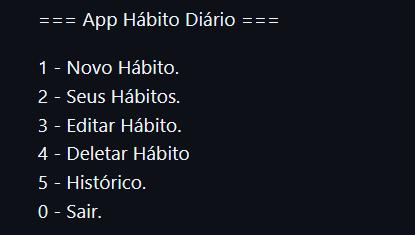
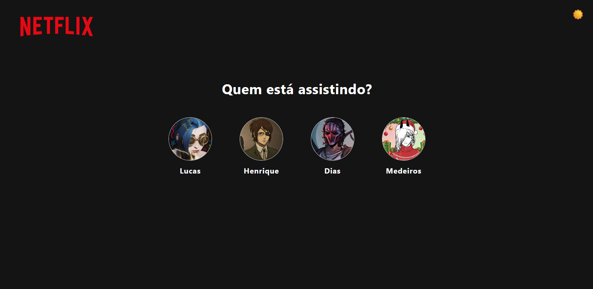
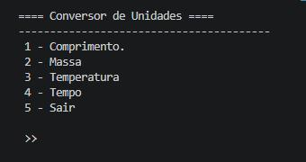

👋🏽 Hello World! Eu sou Lucas Henrique
Estudante de TI em Evolução
Focado em evoluir através da prática e da criação de projetos reais.
Focado em evoluir através da prática e da criação de projetos reais.

Me chamo Lucas Henrique Dias, tenho 19 anos, atualmente sou
estudante de Ciências da Computação (3º período)
e tenho técnico em ADS (Análise e Desenvolvimento de Sistemas).
Tenho interesse em tecnologia e venho construindo minha base através
de estudos e prática constante.
Ao longo da minha formação, tive contato com diferentes áreas da
programação, utilizando linguagens como Python,
C, SQL, além de HTML e
CSS. Também possuo experiência com Linux, controle de versão
com Git e GitHub, modelagem de banco de dados, redes
de computadores e manutenção de hardware.
Busco constantemente evoluir, participando de cursos, eventos e
explorando novas ferramentas e tecnologias dentro da área de TI.
 Python
Python
 SQL
SQL
 HTML5
HTML5
 CSS3
CSS3
 JavaScript
JavaScript
 Git
Git
 Github
Github

📊 Sistema de Hábitos Diários
Sistema em C para gerenciamento de hábitos com funcionalidades de CRUD,
controle de progresso diário e interface em linha de comando.
🔧 C | CLI | Git

🎬 Clone da Netflix (UI)
Recriação da interface da Netflix com foco em responsividade, layout e
interatividade.
🔧 HTML | CSS | JavaScript

🔄 Conversor de Unidades
Aplicação em Python para conversão de unidades com suporte a comprimento,
massa, temperatura e tempo.
🔧 Python | CLI | Git
Sinta-se à vontade para entrar em contato comigo!